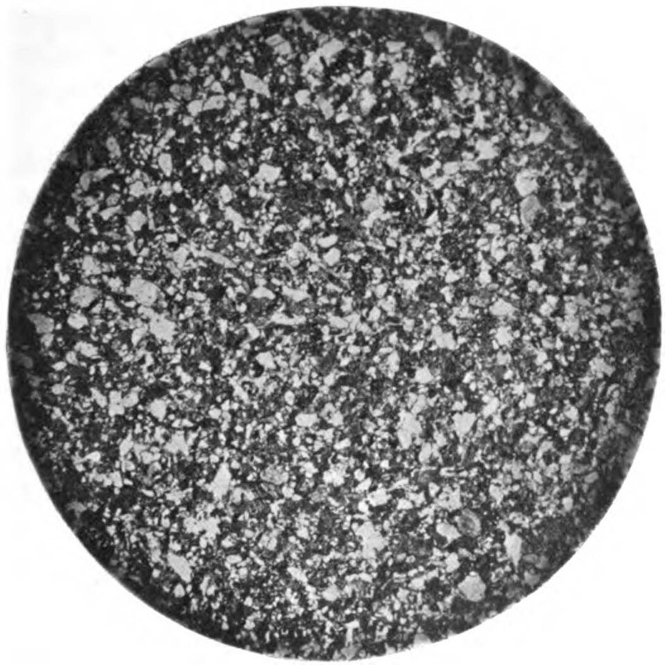

La ley de Darcy y el agua subterránea
Debajo de nuestros pies hay agua: no en ríos subterráneos, sino metida en los poros de la arena, la grava y la roca, avanzando despacio a través de pasadizos diminutos. Lo mismo hace el petróleo en un yacimiento, o el café a través del filtro. Para describir esos flujos hace falta una ley sencilla que un ingeniero francés encontró a mediados del siglo XIX, filtrando agua para una ciudad.

Según el libro de hidrogeología de William Woessner y Eileen Poeter, publicado por The Groundwater Project, en 1856 Henry Darcy dio a conocer experimentos para mejorar el paso del agua por los filtros de arena que la ciudad de Dijon, en Francia, usaba para tratar su agua [1]. Como ingeniero, quería diseñar lechos de arena que filtraran de manera eficiente el volumen de agua que la ciudad necesitaba cada día [1].
Darcy fue cambiando el tipo de arena, el área del filtro, el espesor de la capa de arena y la fuerza que empujaba el agua, que medía con manómetros de mercurio en cada extremo del filtro [1]. Encontró que el caudal era directamente proporcional al área del filtro y a la diferencia de «carga hidráulica» entre los extremos, e inversamente proporcional al largo del filtro; y que también dependía del tipo de arena [1].
Esa relación es la ley de Darcy, la ecuación fundamental para describir el flujo de un fluido a través de un medio poroso, incluida el agua subterránea [1]:
La constante K, la conductividad hidráulica, refleja la facilidad con que el agua atraviesa un material [1]. Woessner y Poeter señalan algo notable: K varía en un rango enorme, de unos 13 órdenes de magnitud según el material, y pocos parámetros físicos varían tanto [1]. Por eso, dicen, conocer el orden de magnitud de K ya es útil, y reportarla con tres decimales tiene poco sentido [1].
La pendiente invisible: la carga hidráulica es como la altura del terreno para una pelota: el agua subterránea siempre «baja» de donde la carga es mayor a donde es menor. La ley de Darcy dice que cuanto más empinada esa pendiente invisible, y cuanto más abierto el material, más agua pasa.
Si se divide el caudal por el área, se obtiene la descarga específica q, que tiene unidades de velocidad pero no es la velocidad real del agua: Woessner y Poeter la llaman también velocidad aparente [1]. El agua, en realidad, solo pasa por la parte del área ocupada por poros conectados, la porosidad efectiva ne, así que va más rápido [1]:
Con una porosidad efectiva de 0,25, por ejemplo, el agua va cuatro veces más rápido que lo que indica q (un cálculo propio con la fórmula). Esa velocidad real es la que importa para saber, por ejemplo, cuánto tarda en llegar un contaminante a un pozo (un razonamiento a partir de la definición).
La ley de Darcy es lineal: el caudal es proporcional al gradiente [1]. Woessner y Poeter explican que vale estrictamente para un flujo laminar de un fluido incompresible a través de una matriz sólida que no se deforma [1]. Para saber si el flujo es laminar se usa el número de Reynolds basado en el tamaño de los granos: la mayoría de los autores coincide en que, si es menor que 1, el flujo es laminar y la ley vale; según Bear, vale mientras no supere algún valor entre 1 y 10 [1]. En condiciones naturales casi siempre se cumple [1]. Las excepciones son materiales con poros enormes y conectados, como las cavernas de las calizas kársticas, los tubos de lava volcánicos, o las zonas cercanas a pozos que bombean mucho [1].
Petróleo y dedos: la ley de Darcy también describe el flujo en una celda de Hele-Shaw, dos placas de vidrio muy juntas, que Jaume Casademunt usa como modelo de un medio poroso [2]. Cuando un fluido poco viscoso empuja a uno más viscoso, como el agua que se inyecta para sacar petróleo de un yacimiento en la recuperación secundaria, el frente se vuelve inestable y forma dedos viscosos [2].
El agua subterránea, el petróleo y el café en el filtro se mueven a través de poros diminutos. Henry Darcy descubrió, filtrando agua para Dijon, que el caudal es proporcional al área y a la diferencia de carga, e inversamente proporcional al largo: la ley de Darcy. Su constante, la conductividad hidráulica, varía en trece órdenes de magnitud según el material, y la ley vale mientras el flujo en los poros sea laminar, que es casi siempre.
Pregunta para la comunidad: Si un acuífero de arena tiene una descarga específica de 0,1 metros por día y una porosidad efectiva de 0,2, ¿cuántos años tarda el agua en recorrer un kilómetro?